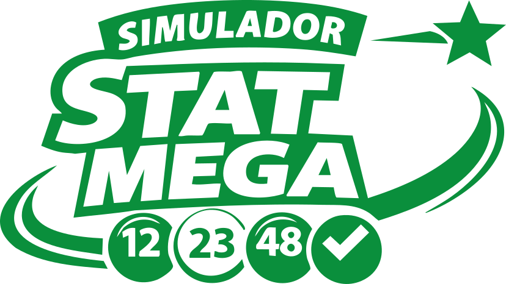

Stat Mega é uma ferramenta interativa que permite ao usuário vivenciar, de forma realista, a experiência de um jogo da Mega-Sena. Nele, o jogador escolhe 6 números (podendo aumentar para mais) entre 1 e 60, realiza o sorteio e recebe imediatamente o resultado com as configurações desejadas.
No volante principal, você deve selecionar os números da sua aposta:
No campo Quantidade de apostas, informe:
Ideal para simular múltiplos cenários de jogo.
No campo Quantidade de números da aposta, você pode:
Se desejar que todas as apostas usem a mesma quantidade de números, ative a opção: Números iguais para todas as apostas.
Use o controle deslizante para definir:
Essa opção é útil para testes estatísticos e simulações personalizadas.
Você pode deixar o sistema sortear automaticamente os números do prêmio ou definir manualmente:
Essa função é ideal para:
O sistema calcula automaticamente:
Os valores seguem a tabela oficial da Mega-Sena.
Quando tudo estiver configurado, clique em: Sortear Jogo.
O sistema irá:
Após o sorteio, o modal de estatísticas reúne todas as informações necessárias para entender melhor o desempenho das suas apostas.
No modal, você poderá:
O simulador é uma ferramenta de análise e aprendizado, não garante ganhos reais. Use com responsabilidade e como apoio para estudo e curiosidade.
A Mega-Sena é a principal loteria do Brasil. O objetivo do jogo é acertar os números sorteados dentre um conjunto de números possíveis, conforme as regras oficiais.
Nesta seção, você vai entender como o jogo funciona, o que significam os prêmios e como as apostas são estruturadas.
Quanto mais números escolhidos, maior a chance de acerto, porém maior o custo da aposta.
A Mega-Sena possui três faixas principais de prêmio:
A quantidade de ganhadores influencia diretamente o valor pago a cada um. Se for acertados 1, 2 ou 3 números não tem prêmio.
Do ponto de vista matemático:
Não existe quantidade “ideal”: trata-se sempre de probabilidade, não de estratégia garantida.
É importante entender um ponto fundamental: Todos os números têm exatamente a mesma chance de serem sorteados.
Mesmo assim, jogadores costumam usar critérios como:
Nenhuma dessas estratégias aumenta matematicamente a chance de ganhar.
Embora sejam interessantes para análise estatística, não influenciam o próximo sorteio, pois cada concurso é independente.
A Mega-Sena é baseada em:
Nenhuma ferramenta, sistema ou padrão pode prever o resultado de um sorteio real.
Seus números:
Números sorteados: